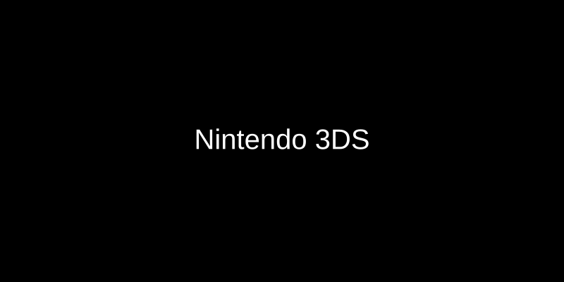

Nintendo Images Gallery

Nintendo Official Image

Nintendo Official Image
Iwata Asks HomeNintendo 3DS
See All VolumesSelect the volume you would like to read:Brain Age: Concentration Training - Volume 1Brain Age: Concentration Training - Volume 2
Brain Age: Concentration Training - Volume 1
1. First Encounter2. Increasing Brain Capacity3. And Sports, Too!4. Dr. Kawashima's Ambition5. Brain Age Vs. Brain Age: Concentration Training6. The Unconscious Working Memory
First EncounterIwataThank you for coming today.KawashimaThank you for inviting me.IwataNow, we've known each other for seven and a half years, haven't we, Dr. Kawashima?KawashimaYes. That's quite a while!IwataThe history of Dr. Kawashima's Brain Age series1 can be traced back to the 2nd of December 2004 â the day the Nintendo DS system was first released in Japan â when I visited you and showed you some prototype software we had made. We've known each other ever since. It just so happens that we're of the same generation, and that we share many of the same experiences.
1. Dr. Kawashima's Brain Age was a software title for the Nintendo DS⢠system. It was released in May 2005 in Japan.
KawashimaYes, we were in the same school year.IwataWhen I found that out, I thought I should go and take the prototype of Brain Age to you in person.KawashimaTo be honest, I was a little guarded when I heard you were visiting. I wondered why in the world the president of Nintendo was coming to see me! (laughs) After we met and talked, however, I discovered that we were on the same wavelength â uncannily so. I remember excitedly suggesting that we tried measuring users' brain activity as they used your prototype software.IwataI really got the sense we were 'on the same wavelength' as well. I already knew about your series of drills for adults2, and had actually tried some of them for myself. I thought they were really good fun, and I was keen to make them into a video game. We had a really lively conversation â even though it was the first time we'd met!
2. Dr. Kawashima has written books including Train Your Brain: Calculation Drills for Adults â 60 Days of Simple Calculation and Train Your Brain: Reading-Aloud Drills for Adults â 60 Days of Reading Famous Works Aloud and Taking Kanji Dictation. The two books were released by Kumon Publishing in November 2003 in Japan, and became very popular.
KawashimaWe certainly did! (laughs)IwataYou were kind enough to evaluate our prototype software that very day. You said the software was fine, that it was having an effect on the brain and could be made into a product. By the time I left, you had given it your endorsement. We had originally arranged to meet for just 30 minutes, but we ended up talking for three hours⦠(laughs) It turned out to be a very significant day!KawashimaYes, it did.IwataWhen we first made Brain Age, it didn't occur to me that it could become such a phenomenon. How did it look to you, Dr. Kawashima?KawashimaI had the same feeling as everyone else â I had no idea it would become so popular. I did think it would attract some attention since it was being made by Nintendo, but I really didn't think it would become so big, and that everyone would start talking about it.IwataI was confident that we had made something that was fun, but I had no idea how it would be received by people who had never played video games before. We just had to release the software and see what happened.
What's more, after it became a big thing in Japan, we decided to take Brain Age overseas. Around the autumn of 2005 I got the feeling that something incredible was happening in Japan. That's when I thought, 'We've got to sell this all over the world!' I felt I was on a mission, and I actually took the software to our sales representatives in America and Europe in person, in order to explain it and build a market for it! (laughs)Kawashima(laughs) To be honest⦠I had my doubts about taking Brain Age overseas. I had the feeling that things like diligently chipping away at calculation drills, for example, were more suited to the Japanese temperament.IwataWell, reading, writing and arithmetic have always symbolized one part of the Japanese culture that Kumon Publishing exports to the world.KawashimaYes. However, some people claimed that such things were part of 'the way of the samurai', and wouldn't become very popular overseas. In that sense, there was a big question mark for me about how Brain Age would be received by the world.IwataWell, in the end it became something of a social phenomenon, with sales in Europe actually surpassing Japanese sales. I think the software played a role in introducing your research to the world, Dr. Kawashima.KawashimaCertainly. I think I actually became quite famous â people knew who I was. For example, a university professor came to see me all the way from Germany. When I asked him why, he said that he and his son played Brain Age. Apparently, his family had been discussing whether or not 'Dr. Kawashima' was a real person! (laughs)IwataOh! (laughs)KawashimaThere was a big debate at his workplace and at his son's school, apparently. Some people were saying, 'He's real!', while others said, 'No, he's a virtual person!' This professor told me he was delighted to meet me in the flesh.IwataIt sounds like he had his doubts about whether or not you were a fictional character too! (laughs)KawashimaYes! I said, 'If Dr. Kawashima were fictional, they would have made him cooler!', and he seemed to agree. I was a little put out about that! (laughs)Iwata and Kawashima(laugh)
Iwata Asks HomeNext
interviewBrain Age: Concentration Training00
eComic Mischief